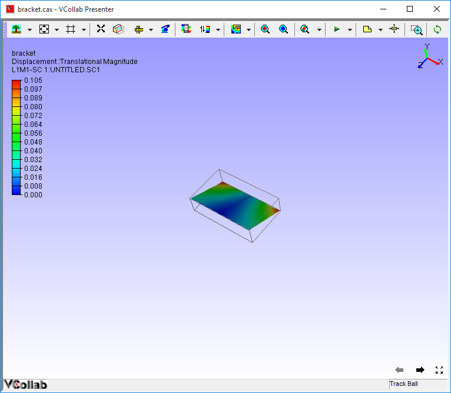

Show/ Hide
The Show/Hide sub menu found in the context menu of VCollab Presenter allows the users to choose what parts to show, hide or delete among other things.
Context Menu - Show/Hide

The various options available under Show/Hide menu are explained below
| Hide | hides currently selected part |
| Hide Other Parts | hides all parts except current selection |
| Show All Parts | displays all parts independent of selection. |
| Invert Visible Parts | hides visible parts and shows invisible parts |
| Deselect All Parts | removes all selections. |
| Delete All Visible Parts | deletes all visible parts. |
| Delete All Hidden Parts | deletes all hidden parts. |
| Axis | Displays Axis triad in the viewer top right corner. |
| Origin | Displays Origin Triad in the scene. |
| Full Screen | Enables full screen mode to the viewer. |
| Properties | Enable Part Properties query mode. |
Steps to use Show/Hide options
Load a model.
Select a part by double clicking on the model.

Select Show/Hide | Hide option in the context menu. Current selected part is hidden.

Select Show/Hide | Hide Others .
All parts are hidden except current selection.

Select Invert Show option.
All hidden parts are displayed and all visible parts are hidden.

Select Show All’.
All parts, independent of any type of selection are shown.
- Click Deselect All option to clear any type of selection on model parts.
Properties
This option displays part properties and other user information during mouse over actions.
Users can add more information in the property label.
Part Properties Display
Click Display Mode -> Properties to change mouse mode to properties display.
Move the mouse over any part.
The part name and other properties if available are displayed.
Click on a part to fix the label as an annotation to the part.

Steps to Add Information
Using Edit Notes option
Click on any part
A permanent label is annotated with the same information to the part.
Double click the label to open Edit Notes dialog.
Edit the text and Click OK.

Using User Info option.
Double click a part in the model.
Locate and select the selected part in the product explorer window.
Select User Info from the context menu.

Enter additional information in the User Info dialog box.
Click OK.
Click Display -> Properties.
Move the mouse over any part.
The part name and other properties if available are displayed.